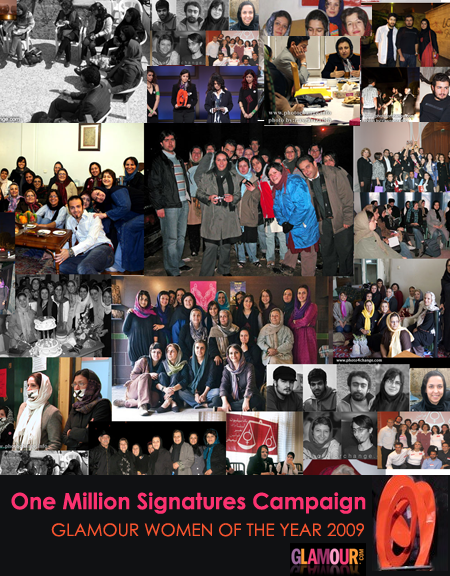

|
|
|
Browsing
Contact Us |
Campaigners |
Face to Face |
Tribune |
Interview |
News |
On the Web |
One Million |
Report
Farsi | Français | German | Italian | Spanish | العربية Also in this section
|
 The Campaign Honored with Glamour’s Women of Year Award One Million Signatures Campaign: the Women of 2009Friday 20 November 2009 One Million Signatures Campaign: the Women of 2009 By Kiana Karimi & Negar Sammaknejad Nov. 09, 2009 - In a dazzling ceremony held in New York City Carnegie Hall, Glamour magazine honored twelve women and groups who have made a difference this year. The One Million Signatures Campaign received the 2009 Women of the Year award because as Shirin Ebadi, the Nobel Peace prize winner and winner of the 2008 Glamour award has said, "One Million Signatures seized every opportunity to show the world that they do not agree with the discriminatory laws in Iran." The One Million Signatures Campaign is a grassroots movement which began in August 2006 with the aim of collecting one million signatures for a petition that requests the Iranian parliament to revise and reform laws that discriminate against women. Today the campaign is regarded as one of the most vibrant civil society movements in Iran, as demonstrated by its success in finding its way into people’s homes and hearts. Despite extensive pressure placed on its activists, including arrests and prosecutions, the Campaign has continued its work and extended its horizontal independent network of volunteers to 20 cities in Iran and 14 countries across the world in which there are significant Iranian populations. Having witnessed the extraordinary presence and mobilization of Iranian women during the presidential election campaign and in the protests subsequent to the elections, Melanie Abrahams, editor of Glamour magazine, was certain of one thing in her heart: that the winner of the International Glamour award this year must be the women of Iran. After extensive research into women’s activism in Iran, she learned about the Campaign and its work. Abrahams remarked, "Once I found the Campaign through their website, there was a wealth of information for me about the struggles and bravery of Iranian women for gender equality." She continues, “next thing, I was looking for ‘the person in charge’, though soon I learned that there is nobody in charge in the campaign, it is a network of activists with a collaborative approach…I was amazed by their structure". Abrahams believed this award has brought her new kind of sisterhood with women from other side of the world. The award also included a financial prize, but since the campaign does not accept any financial support from any organization, the prize went toward an educational scholarship for Iranian Women, named "The Glamour Women of the Year Fund". The fund is working with the Jenzabar Foundation—a nonprofit organization co-founded by 1990 Woman of the Year and Tiananmen Square hero, Ling Chai—to help Iranian women study at universities in the United States. Read more about the scholarship here: The Award Ceremony: Carnegie Hall Stood Up in Solidarity with Iranian Women Christian Amanpour, the international CNN journalist who has covered Iran extensively in recent years, including during and after the election, presented the award to the Campaign and expressed her deep honor for being an Iranian woman and their work. "I am here tonight to tell you about the extraordinary Iranian women and I have to say I am extremely proud of their guts and their story...for the past three years, a group of activists in Iran have risked their lives to collect a million signatures demanding an end to the laws that still make Iranian women second class citizens and this is their fight. It is a dangerous fight, and joining us tonight are five of those brave women who have signed the petition. They put their lives on the line to fly here and be on the stage tonight. A third friend was threatened and was unable because of those threats to make the trip and two others were arrested just last week and still they won’t be silenced." "We are standing here now thanks to 100 years of efforts on the part of Iranian women and their dedication to gender equality." These were the opening words of members of One Million Signatures Campaign statement when accepting the award. The activists considered the award to be a symbol for solidarity and hoped that collaboration and sharing would be the basis of the ongoing relationship between them and American women: "The One Million Signatures campaign commenced its work three years ago and its activities have had a tremendous positive impact on the cause for women’s rights in Iran. Despite all the pressures and arrests, the Campaign’s numerous achievements have brought it international recognition and numerous awards. These awards are symbols of solidarity between the women in Iran and the women from all over the world. They reinforce our global sisterhood, between sisters who are not victims, but who are active in a common struggle. We wish to extend a special thanks to Glamour magazine for providing us with this opportunity for us to be present here and share our work and experiences with American women and the American people." Among the other honorees were a number of inspiring women: Maya Angelou, the great black American poet; Dr. Jane Aronson, the founder of the Worldwide Orphans Foundation (WWO); Euna Lee and Laura Ling, journalists for Current TV who were arrested on the border of North Korea while making a report about human trafficking; Marissa Mayer, the vice president of search and user experience at Google; Stella McCartney, the chief designer of Chloe and an advocate for the greening of fashion; Amy Poehler, the Saturday Night Live comedian; Susan Rice, peacemaker and U.S Ambassador to the United Nations; Rihanna, the pop singer; Maria Shriver, activist and the California First Lady and one of the forces behind the launch of "United We Serve"; and finally Serena Williams, the tennis champion. The Importance of International Civil Society Support for Iranian Activists Grows With the increasing concern about the situations of women’s rights activists in Iran, international support has never been so critical. Only last week twelve members of the Campaign were summoned to the Revolutionary Court without any clear explanation. With over thirteen million monthly readers and three million online readers worldwide, Glamour magazine raised awareness on a wide international scale concerning the courageous work of women’s activists in Iran. The award was a symbol of solidarity between women around the world and a big step toward creating bridges betwen the women worldwide so that they might share their experiences and strength with each other. To read the thoughts of guests at the Glamour awards, including Susan Rice, Lisa Ling, Andie MacDowell, Maria Shriver, Laura Ling, Marissa Mayer, Ling Chai, Katie Couric, Dr. Jane Aronson, Diane von Furstenberg, Jill Herzig, Emily Smith, Melanie Abrahams, and Steven Tyler, about the One Million Signatures Campaign and the activism of Iranian women visit the site of the Campaign in California. |